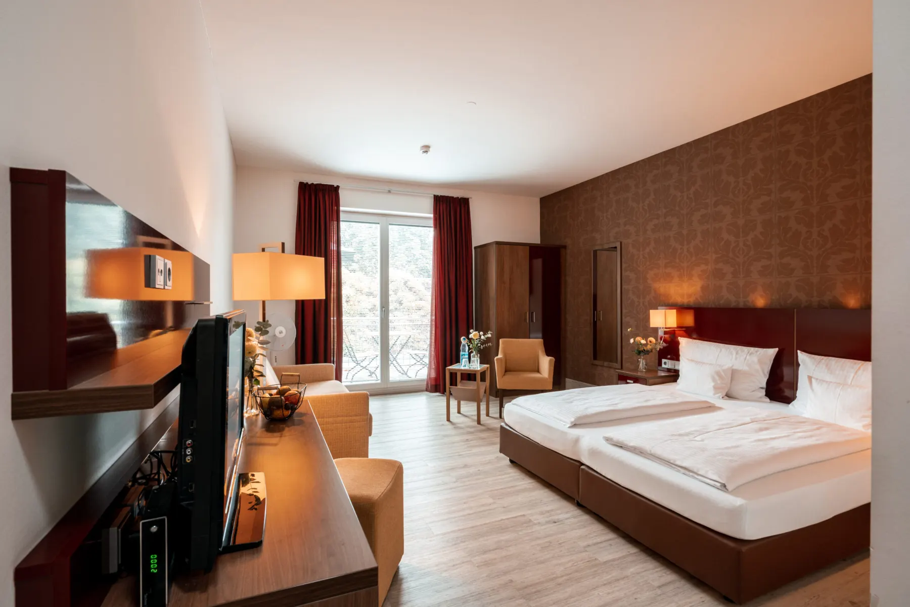

Weinhotel, Stiegelgasse 70
Übernachten
50 Zimmer in zwei Häusern, Frühstück vom Buffet. Die Vinothek ist in derselben Gasse.
Zimmer buchen


Weingut & Weinhotel in Ingelheim, Rheinhessen
JGA, Geburtstag oder Tagung: an langen Tafeln, vor der Steinwand oder draußen unter der Lichterkette.
Feier anfragenDas Weinhotel hat 50 Zimmer in zwei Häusern, morgens wartet das Frühstücksbuffet.
Zimmer buchenVier Wege, die sich mischen lassen. Wer tagsüber probiert, kann abends feiern und bleibt über Nacht.
Weinhotel, Stiegelgasse 70
50 Zimmer in zwei Häusern, Frühstück vom Buffet. Die Vinothek ist in derselben Gasse.
Zimmer buchen
Weingut, Stiegelgasse 50
Weinprobe in der Vinothek, Planwagen durch die Weinberge, im Mai und Juni die Straußwirtschaft.
Weinprobe anfragen
Weingut und Weingarten
Tagsüber Weinprobe oder Workshop, abends die lange Tafel. Und keine muss mehr fahren.
JGA planen
Eventraum im Weingut
Tagsüber im Eventraum, abends bei der Weinprobe. Geschlafen wird im Haus.
Tagung anfragenOnline-Shop
Bio-Weine für zu HauseEin Familienbetrieb mit drei Generationen im Haus, dazu ein Team, das eure Feier mitplant.

Ilona WasemLeitung Weinhotel

Julia WasemGründerin und Winzerin

Marie WasemGründerin und Betriebsleitung

Burkhard WasemKellermeister

Oma MagdaTeamköchin und Bäckerin
Stiegelgasse 50 und 70, 55218 Ingelheim